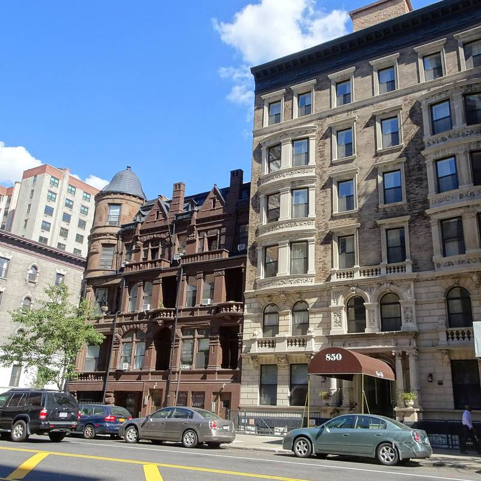

미국 뉴욕 맨해튼 125세대 주택협동조합, 조합 적립금 12만4,000달러로 지붕 태양광 약 40장…연 1만8,000kWh

계량기 하나로 요금 내는 건물이라 상계가 세대 전기요금까지 줄여…시 재산세 감면 30%, 이사회는 투자 회수 5~10년 추정
미국 뉴욕 맨해튼 어퍼웨스트사이드의 125세대 주택협동조합 '클리프턴 하우스(Clifton House)'가 조합 적립금 12만4,000달러를 들여 건물 지붕에 태양광 패널 약 40장을 달았다. 문화재로 지정된 17층 건물로 지붕이 좁아 몇 년 전 처음 검토할 때는 연 4,000kWh 정도밖에 안 된다는 평가를 받았지만, 지붕 공간을 다시 따져 보니 연 1만8,000kWh까지 만들 수 있는 것으로 나왔다. 시공사 브루클린 솔라웍스(Brooklyn SolarWorks)는 건물 높이가 100피트를 넘어 지붕 둘레에 소방 통로를 비워야 하는 규정을 적용받지 않았고, 앞서 고친 전기 설비 덕에 지하까지 배선을 끌어내리지 않고 지붕에서 바로 연결할 수 있었다고 설명했다. 발전량은 건물 전체 전기 사용의 3~5%지만, 건물이 계량기 하나로 요금을 내는 통합계량 방식이어서 상계(넷미터링)가 공용 공간뿐 아니라 각 세대의 전기요금까지 줄인다. 사업비의 30%는 뉴욕시 재산세 감면으로 돌려받고 조합원은 개인 한도 안에서 비용의 최대 25%까지 뉴욕주 소득세 공제를 따로 신청할 수 있으며, 이사회는 투자 회수 기간을 5~6년에서 약 10년으로 추정한다. 조너선 몬트백(Jonathan Montbach) 이사장은 "부자가 되진 않겠지만 조금은 보탬이 될 것"이라며 건물 운영비 일부라도 길게 안정시키려는 결정이라고 말했다.
시민에너지 관점
125세대가 함께 모은 조합 적립금으로 지붕 발전소를 직접 소유하고 그 전기가 세대 요금을 함께 덜어 주는 구조는, 공동주택이 전기를 사 쓰기만 하는 곳에서 스스로 만드는 곳으로 바뀌는 가장 작은 단위를 보여 준다. 건물 전기의 3~5%에 그쳐 효과가 작다는 지적이 나올 수 있지만, 설비가 조합 소유여서 줄어든 요금과 세금 감면이 고스란히 조합원 몫으로 남고 투자를 회수한 뒤의 전기는 그대로 공동의 자산이 된다. 덴마크 코펜하겐 앞바다의 미델그룬덴 해상풍력도 절반을 시민 협동조합이 소유하는 방식으로 지어져, 작은 출자가 모이면 도시 한가운데서도 시민이 발전소의 주인이 될 수 있음을 보여 줬다. 국내 아파트도 장기수선충당금 같은 공동 적립금이나 입주민 협동조합이 지붕 태양광을 소유하고 그 이익을 세대에 나눌 수 있도록 공동주택 전기 계약과 관리 규정부터 고쳐야 한다.
출처: Habitat Magazine 2026-11-04 Emily Myers 원문 보기
米ニューヨーク・マンハッタンの125世帯住宅協同組合、組合の積立金12万4,000ドルで屋根に太陽光パネル約40枚…年1万8,000kWh
メーター一つで料金を払う建物のため、ネットメータリングが各世帯の電気料金まで軽減…市の固定資産税減免30%、理事会は投資回収5～10年と見込む
米ニューヨーク・マンハッタンのアッパーウエストサイドにある125世帯の住宅協同組合「クリフトン・ハウス（Clifton House）」が、組合の積立金12万4,000ドルを投じて建物の屋根に太陽光パネル約40枚を設置した。歴史的建造物に指定された17階建ての建物で屋根が狭く、数年前に初めて検討した際は年4,000kWh程度にとどまるとの評価だったが、屋根のスペースを改めて見直したところ年1万8,000kWhまで発電できることが分かった。施工会社ブルックリン・ソーラーワークス（Brooklyn SolarWorks）は、建物の高さが100フィートを超えるため屋根の周囲に消防用の通路を空ける規定の適用を受けず、以前に改修した電気設備のおかげで地下まで配線を引き下ろさずに屋上で直接接続できたと説明した。発電量は建物全体の電力使用の3～5%だが、建物がメーター一つで料金を払う一括受電方式のため、ネットメータリングによる相殺が共用部分だけでなく各世帯の電気料金も減らす。事業費の30%はニューヨーク市の固定資産税減免で戻り、組合員は個人の上限の範囲で費用の最大25%までニューヨーク州の所得税控除を別途申請でき、理事会は投資回収期間を5～6年から約10年と見込んでいる。ジョナサン・モントバック（Jonathan Montbach）理事長は「これで金持ちになるわけではないが、少しは足しになるだろう」と述べ、建物の運営費の一部でも長期的に安定させるための決定だと語った。
市民エネルギーの視点
125世帯がともに積み立てた組合の資金で屋根の発電所を直接所有し、その電気が各世帯の料金をともに軽くする仕組みは、集合住宅が電気を買って使うだけの場から自ら生み出す場へと変わる最も小さな単位を示している。建物の電力の3～5%にとどまり効果が小さいという指摘も出うるが、設備が組合の所有であるため、減った料金と税の減免はそのまま組合員の取り分として残り、投資を回収した後の電気はそのまま共同の資産になる。デンマーク・コペンハーゲン沖のミドルグルンデン洋上風力も半分を市民協同組合が所有する形で建てられ、小さな出資が集まれば都市の真ん中でも市民が発電所の持ち主になれることを示した。韓国のマンションでも、長期修繕積立金のような共同の積立金や入居者協同組合が屋根の太陽光を所有し、その利益を各世帯に分けられるよう、共同住宅の電力契約と管理規約から改めるべきだ。
出典: Habitat Magazine 2026-11-04 Emily Myers 原文を読む
美国纽约曼哈顿125户住房合作社用合作社储备金12.4万美元在屋顶安装约40块光伏板…年发电1.8万kWh
整栋楼共用一个电表缴费，净计量抵扣惠及各户电费…市房产税减免30%，理事会估计投资回收期5至10年
美国纽约曼哈顿上西区的125户住房合作社"克利夫顿之家（Clifton House）"动用合作社储备金12.4万美元，在楼顶安装了约40块光伏板。这栋楼是被列为历史地标的17层建筑，屋顶狭小，几年前首次评估时只被认为每年能发电约4,000kWh，但重新核算屋顶空间后，发现每年可发电1.8万kWh。施工方布鲁克林太阳能公司（Brooklyn SolarWorks）解释说，由于建筑高度超过100英尺，不适用在屋顶四周留出消防通道的规定；而且此前改造过电气设备，可以直接在屋顶接入，无需把线路一直拉到地下室。发电量只占整栋楼用电的3%至5%，但由于该楼采用一个电表统一缴费的方式，净计量抵扣不仅减少公共区域电费，也减少各户的电费。项目费用的30%将通过纽约市房产税减免收回，合作社成员还可在个人限额内另行申请最高为费用25%的纽约州所得税抵免；理事会估计投资回收期为5至6年到约10年。理事长Jonathan Montbach表示，"我们不会靠它发财，但多少能有所帮助"，这一决定是为了让楼宇的部分运营成本长期保持稳定。
市民能源视角
125户共同积累的合作社资金直接拥有屋顶电站，所发电力一起减轻各户电费，这种结构展示了共同住宅从只买电用电的地方转变为自己发电的地方的最小单位。有人可能指出，它只占整栋楼用电的3%至5%，效果有限；但由于设备归合作社所有，省下的电费和税收减免都会完整地留给成员，收回投资后发出的电也将成为共同资产。丹麦哥本哈根近海的米德尔格伦登海上风电场也有一半由市民合作社拥有，说明小额出资汇聚起来，即使在城市中心，市民也能成为电站的主人。韩国的公寓也应从修改共同住宅的电力合同和管理规约入手，让长期维修基金这样的共同储备金或住户合作社能够拥有屋顶光伏，并把收益分给各户。
来源: Habitat Magazine 2026-11-04 Emily Myers 查看原文
125-unit Manhattan housing co-op puts about 40 solar panels on its roof with US$124,000 from reserves, for 18,000kWh a year
Because the building pays one master-metered bill, net metering also cuts apartment electricity costs; a city property tax abatement covers 30%, and the board estimates payback at five to ten years
Clifton House, a 125-unit housing cooperative on Manhattan's Upper West Side in New York, has installed about 40 solar panels on its roof, paying US$124,000 out of the co-op's reserves. The landmarked 17-storey building has a cramped roof, and when solar was first considered a few years ago it was assessed at only around 4,000kWh a year, but a fresh look at the available roof space found it could generate up to 18,000kWh a year. Installer Brooklyn SolarWorks said that because the building is more than 100 feet tall it was not bound by rules requiring firefighter clearances around the roof's edge, and that an earlier electrical upgrade allowed the system to connect on the roof instead of running wiring down to the basement. The panels cover only 3% to 5% of the building's total electricity use, but because the building pays a single master-metered bill, net metering offsets costs for individual apartments as well as common areas. A New York City property tax abatement will cover 30% of the cost, shareholders can separately apply for a New York State income tax credit of up to 25% of the cost subject to individual caps, and the board estimates the payback period at anywhere from five or six years to about 10 years. Board president Jonathan Montbach said the co-op would not get rich from it but that it might help at the margins, adding that the aim was to stabilise at least part of the building's operating costs over the long term.
Citizen Energy View
A rooftop power plant owned directly through reserves that 125 households built up together, with its electricity lowering every household's bill, shows the smallest unit in which an apartment building turns from a place that only buys power into one that makes its own. Some may say that covering 3% to 5% of the building's electricity is too little to matter, but because the system belongs to the co-op, the lower bills and tax breaks stay with its members, and once the investment is paid back the electricity becomes a shared asset. Half of Denmark's Middelgrunden offshore wind farm outside Copenhagen was likewise built under citizen cooperative ownership, showing that small contributions pooled together can make citizens owners of power plants even in the middle of a city. In Korea, too, apartment electricity contracts and management rules should be changed first so that shared funds such as long-term repair reserves, or residents' cooperatives, can own rooftop solar and share the gains among households.
Source: Habitat Magazine 2026-11-04 Emily Myers Read the original